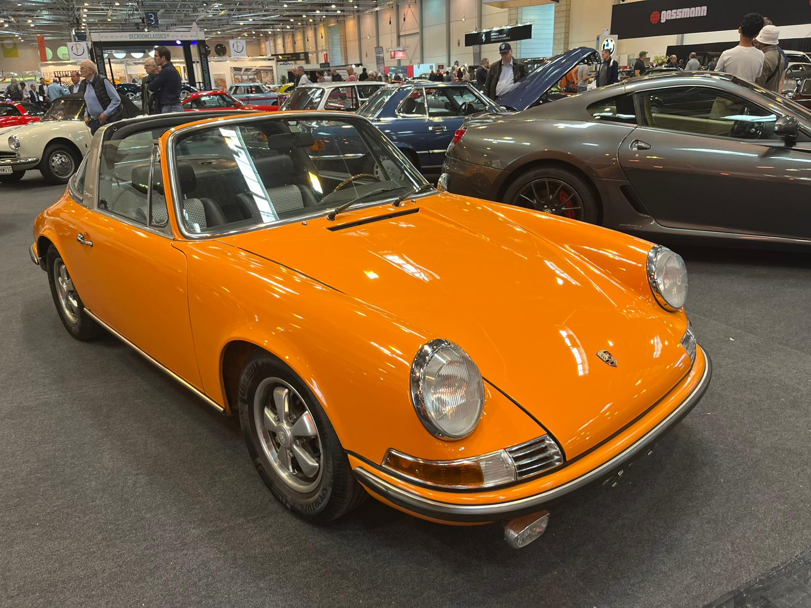

911 Targa
Marks eigen 911 Targa als uitgangspunt voor een decoratief printmodel. De lange neus, ronde spatborden en brede Targaband moeten ook op kleine schaal herkenbaar blijven.
Ontwerpvoorstel · passende 3D-uitwerking volgt
Het Targa-voorstel
Geel-oranje · zwart · zilvergrijs


De foto kon niet worden geladen. Gebruik ‘Foto groot openen’ om het bestand te bekijken.
- Bouwjaar auto
- 1971
- Richtlengte model
- ≈20cm
- Printer
- P2S+ AMS
- Kleurvoorstel
- 3kleuren
Kleurvoorstel
Een richting voor de uitvoering met AMS.
- Geel-oranjeCarrosserie
- ZwartBanden, interieur en raaminzetten
- ZilvergrijsTargaband, velgdetails en accenten
De definitieve schaal, maat en onderdeelindeling volgen bij het uitwerken van de carrosserie.
De vorm moet kloppen
Te beoordelen aan het volgende 3D-ontwerp.
Neus en silhouet
Targa en achterzijde
0 van 6 vormcriteria afgevinkt
Je vinkjes worden op dit apparaat bewaard voor je eigen beoordeling.
Projectbestanden
Referenties, keuzes en de stand van het ontwerp.
Van referentie naar model
- De carrosserie opbouwen. Een passende vroege 911-basis kiezen of betrouwbare profielen uitwerken, met de eigen foto’s als vergelijking.
- Van alle kanten beoordelen. Dezelfde geometrie bekijken van voren, opzij en in beide driekwartaanzichten.
- Geschikt maken voor het printen. Daarna de details, onderdelen, wanddiktes en printoriëntatie uitwerken voor de P2S.
Huidige fase: ontwerpvoorbereiding. Het Targa-voorstel geeft de gewenste uitstraling weer. Een passend 3D-model en de printonderdelen moeten nog worden uitgewerkt.